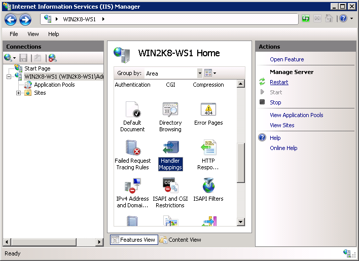

Microsoft IIS 7.0 y posteriores
Esta sección contiene instrucciones para configurar en forma manual Internet Information Services (IIS) 7.0 y posteriores para trabajar con PHP en Microsoft Windows Vista SP1, Windows 7, Windows Server 2008 and Windows Server 2008 R2. Para obtener instrucciones sobre la configuración de IIS 5.1 and IIS 6.0 on Windows XP and Windows Server 2003 refiérase a Microsoft IIS 5.1 and IIS 6.0.
Habilitación de apoyo FastCGI en IIS
Módulo FastCGI está deshabilitado en la instalación por defecto de IIS. Los pasos para que pueda variar según la versión de Windows se está utilizando.
Para activar el soporte FastCGI en Windows Vista SP1 y Windows 7:
-
En el menu de inicio de Windows seleccione "Run:", teclee "optionalfeatures.exe" y click "Ok";
-
En el "Windows Features" cuadro de diálogo "Internet Information Services", "World Wide Web Services", " Caracteristicas Desarrollo de aplicaciones " y luego permitir que el "CGI" checkbox;
-
Haga clic en Aceptar y espere hasta que se complete la instalación

Para activar el soporte FastCGI en Windows Server 2008 y Windows Server 2008 R2:
-
En el menú Inicio de Windows elegir "Run:", teclee "CompMgmtLauncher" y click "Ok";
-
En el "Web Server (IIS)" El rol no está presente en el marco del "Roles" nodo, a continuación, añadir haciendo clic en "Adicionar Roles";
-
Si la "Web Server (IIS)" role esta presente, entonces haga click "Add Role Services" y luego permitir que el "CGI" casilla de verificación en grupo "Desarrollo de Aplicaciones" ;
-
Click "Next" y luego "Install" ay espere a que la instalación se complete.

Configurar IIS para procesar las solicitudes de PHP
Descargue e instale PHP de acuerdo a las instrucciones descritas en manual installation steps
Nota:
No construir thread-safe de PHP se recomienda cuando IIS utilizando. El no-thread-safe crea están disponibles en » PHP para Windows: binarios y fuentes.
Configure el CGI y la configuración específica de FastCGI php.ini fichero como se muestra a continuación:
Ejemplo #1 CGI y FastCGI en la configuración php.ini
fastcgi.impersonate = 1
fastcgi.logging = 0
cgi.fix_pathinfo=1
cgi.force_redirect = 0
Configurar la asignación de IIS controlador para PHP utilizando la interfaz de usuario Administrador de IIS o una herramienta de línea de comandos.
El uso de IIS interfaz de usuario de Manager para crear una asignación de controlador para PHP
Siga estos pasos para crear una asignación de controlador de IIS para PHP en la interfaz de usuario Administrador de IIS:
-
En el menú Inicio de Windows elegir "Run:", escriba "inetmgr" y click "Ok";
-
En la interfaz de usuario de IIS Manager, seleccione el nodo de servidor en el "Connections" vista de árbol;
-
En el "Características" Página de abrir el "Handler Mappings" feature;
 -
En el "Actions" haga click en panel "Add Module Mapping...";
-
En el "Add Module Mapping" diálogo entre lo siguiente:
- Solicitud de ruta: *.php
- Modulo: FastCgiModule
- Ejecutable: C:\[Path to PHP installation]\php-cgi.exe
- Nombre: PHP_via_FastCGI
-
Haga Click en "Solicitar Restricciones" botón y luego configurar la asignación de invocar controlador sólo si la solicitud se asigna a un archivo o una carpeta;
-
Haga clic en Aceptar en todos los cuadros de diálogo para guardar la configuración.

Utilizando la herramienta de línea de comandos para crear una asignación de controlador para PHP
Utilice el comando mostrado a continuación para crear un grupo de IIS FastCGI proceso que utilizará php-cgi.exe ejecutable para la tramitación de solicitudes de PHP. Vuelva a colocar el valor del parámetro fullPath con la ruta absoluta al fichero php-cgi.exe.
Ejemplo #2 >Creación del proceso del grupo IIS FastCGI
%windir%\system32\inetsrv\appcmd set config /section:system.webServer/fastCGI ^
/+[fullPath='c:\PHP\php-cgi.exe']
Configurar IIS PHP para manejar las peticiones concretas de la ejecución del comando que se muestra a continuación. Vuelva a colocar el valor del parámetro scriptProcessor con la ruta de acceso absoluta al fichero php-cgi.exe.
Ejemplo #3 Creación de mapas manejador de peticiones PHP
%windir%\system32\inetsrv\appcmd set config /section:system.webServer/handlers ^
/+[name='PHP_via_FastCGI', path='*.php',verb='*',modules='FastCgiModule',^
scriptProcessor='c:\PHP\php-cgi.exe',resourceType='Either']
Este comando crea una asignación de controlador de IIS para la extensión de archivo *.php, lo que resultará en todas las direcciones URL que terminan con. Php siendo manejado por el módulo FastCGI.
Nota:
En este punto la necesidad de instalación y configuración de los pasos se han completado. Las instrucciones a continuación son opcionales, pero altamente recomendable para lograr una funcionalidad óptima y el rendimiento de PHP en IIS.
Suplantación de identidad y acceso a archivos del sistema
Se recomienda habilitar la suplantación en PHP FastCGI cuando IIS utilizando. Esta está controlado por la directiva fastcgi.impersonate en el fichero php.ini. Cuando está habilitada la suplantación, PHP realizará todas las operaciones del sistema de ficheros en nombre de la cuenta de usuario que ha sido determinado por la autentificación de IIS. Esto asegura que, aunque el proceso mismo PHP es compartido a través de diferentes sitios web IIS, los scripts PHP en los sitios web no será capaz de acceder a los demás ficheros, siempre y cuando las cuentas de usuario se utilizan para la autenticación de IIS en cada sitio web.
Por ejemplo IIS 7, en su configuración por defecto, se ha habilitado la autenticación anónima con incorporada IUSR cuenta de usuario utilizada como una identidad por defecto. Esto significa que para que IIS ejecutar scripts PHP, es necesario conceder a la cuenta IUSR permiso de lectura en estos scripts. Si las aplicaciones PHP necesidad de realizar operaciones de escritura de ciertos ficheros o escribir ficheros en una carpetas entonces cuenta IUSR debe tener permiso para escribir en ellos.
Para determinar qué cuenta de usuario se utiliza como una identidad anónima en IIS 7 utilice el siguiente comando. Vuelva a colocar el "Sitio Web predeterminado" con el nombre del sitio Web de IIS que utiliza. En la producción configuración XML aspecto de elemento para el atributo userName.
Ejemplo #4 La determinación de la cuenta utilizada como IIS identidad anónima
%windir%\system32\inetsrv\appcmd.exe list config "Default Web Site" ^
/section:anonymousAuthentication
<system.webServer>
<security>
<authentication>
<anonymousAuthentication enabled="true" userName="IUSR" />
</authentication>
</security>
</system.webServer>
Nota:
Si el atributo userName no está presente en el elemento anonymousAuthentication, o si se establece una cadena vacía, entonces significa que la identidad del grupo de aplicaciones se utiliza como un identidad anónima para ese sitio web.
Para modificar la configuración de permisos de archivos y carpetas, utilice la interfaz de usuario del Explorador de Windows o comando icacls.
Ejemplo #5 Configuración de archivo de los permisos de acceso
icacls C:\inetpub\wwwroot\upload /grant IUSR:(OI)(CI)(M)
Establecer index.php como un documento predeterminado en IIS
Los documentos por defecto de IIS se utilizan para las solicitudes HTTP que no se especifica un nombre de documento. Con las aplicaciones PHP,index.php por lo general actúa como un documento predeterminado. Para añadir index.php a la lista de los documentos por defecto de IIS, utilice este comando:
Ejemplo #6 Establecer index.php como un documento predeterminado en IIS
%windir%\system32\inetsrv\appcmd.exe set config ^
-section:system.webServer/defaultDocument /+"files.[value='index.php']" ^
/commit:apphost
FastCGI y configuración de PHP Reciclaje
Configurar la configuración de IIS FastCGI PHP para el reciclaje de los procesos mediante los comandos de abajo. La configuración FastCGI instanceMaxRequests controla cuántas peticiones se procesado por un solo peoceso php-cgi.exe antes de IIS se cierra. La variable de entorno PHP PHP_FCGI_MAX_REQUESTS controla el número pide una sola proceso php-cgi.exe se encargará antes de que se recicla sí misma. Asegúrese de que el valor especificado para la configuración FastCGI InstanceMaxRequests es menor o igual al valor especificado para PHP_FCGI_MAX_REQUESTS.
Ejemplo #7 Configuración de PHP FastCGI y el reciclaje
%windir%\system32\inetsrv\appcmd.exe set config -section:system.webServer/fastCgi ^
/[fullPath='c:\php\php-cgi.exe'].instanceMaxRequests:10000
%windir%\system32\inetsrv\appcmd.exe set config -section:system.webServer/fastCgi ^
/+"[fullPath='C:\{php_folder}\php-cgi.exe'].environmentVariables.^
[name='PHP_FCGI_MAX_REQUESTS',value='10000']"
FastCGI ajustes de tiempo de espera
Aumentar el tiempo de espera para la configuración de FastCGI si se espera tener a largo ejecutar scripts PHP. Los dos valores que los tiempos de espera de control activityTimeout y requestTimeout. Utilice los comandos siguientes para cambiar la configuración de tiempo de espera. Asegúrese de sustituir el valor en el parámetro a fullPath contendrá la ruta absoluta a el fichero php-cgi.exe.
Ejemplo #8 Configuración de los ajustes de tiempo de espera FastCGI
%windir%\system32\inetsrv\appcmd.exe set config -section:system.webServer/fastCgi ^
/[fullPath='C:\php\php-cgi.exe',arguments=''].activityTimeout:"90" /commit:apphost
%windir%\system32\inetsrv\appcmd.exe set config -section:system.webServer/fastCgi ^
/[fullPath='C:\php\php-cgi.exe',arguments=''].requestTimeout:"90" /commit:apphost
Cambiar la ubicación del fichero php.ini
PHP busca el fichero php.ini en varios lugares y es posible cambiar las ubicaciones predeterminadas del fichero php.ini utilizando variable de entorno PHPRC. Encomendar a PHP para cargar el archivo de configuración desde una ubicación personalizada, ejecute el comando se muestra a continuación. La ruta de acceso absoluta al directorio con el fichero php.ini debe ser especifica como un valor de variable de entorno PHPRC.
Ejemplo #9 Cambiar la ubicación del fichero php.ini
appcmd.exe set config -section:system.webServer/fastCgi ^
/+"[fullPath='C:\php\php.exe',arguments=''].environmentVariables.^
[name='PHPRC',value='C:\Some\Directory\']" /commit:apphost